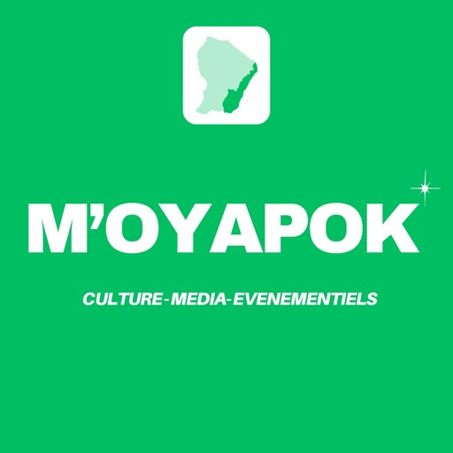

Le hub culturel de l'Est guyanais
la voix des fleuves, de l'Approuague à l'Oyapock
Yapok
Média
Sons, images, récits et rendez-vous de l'Est guyanais, réunis sur une seule plateforme ouverte aux artistes, associations et structures du territoire.
Régina · Saint-Georges · Ouanary · Camopi

Les rubriques
tout ce qu'on y trouve
sur le hub
Écouter, lire, regarder, sortir : six rubriques pour suivre la vie culturelle de l'Est guyanais.
Webradio
Musiques du territoire, voix des villages et émissions en direct.
02Podcasts
Des séries à écouter ou télécharger, dont Kozé Tan Lontan.
03Yapok Mag
Le webzine mensuel : portraits, reportages et patrimoine.
04Vidéos
Documentaires, clips, sessions live et reportages.
05Photos
Le fleuve, les villages et les événements en images.
06Agenda
Les rendez-vous culturels des quatre communes.
Le territoire
Quatre communes, deux fleuves
De l'Approuague à l'Oyapock, le hub donne la même place à chaque commune de l'Est guyanais.
Vous habitez l'une de ces communes ? Devenez correspondant du hub. Devenir correspondant
Le podcast mémoire
Kozé
Tan Lontan
la mémoire de l'Est guyanais, racontée par celles et ceux qui l'ont vécue.
Chaque épisode, un invité raconte un lieu, hier et aujourd'hui. Vous avez une histoire à transmettre ?
À écouter
Derniers podcasts
Agenda
Prochains rendez-vous
Le hub en bref
Une plateforme partagée
Mutualiser les outils pour que chaque acteur, même modeste, ait une place visible et durable sur le web.
Yapok Média réunit la webradio, les podcasts, le magazine Yapok Mag, les vidéos, les photos et l'agenda. Chaque artiste, association ou structure accueillie dispose de son espace, sous la responsabilité éditoriale de l'association M'OYAPOK.
Découvrir le projetIls font le hub
Les acteurs
Rejoindre le hub
rejoindre le hub
en trois temps
- 01
Vous proposez
Un son, une photo, un événement, un projet d'émission : vous nous écrivez, sans engagement.
- 02
On vous accompagne
L'équipe relit, conseille, prête le matériel et forme si besoin.
- 03
On diffuse
Votre contenu rejoint le hub, la webradio et Yapok Mag, avec votre nom.
Contact
une idée, un événement, un témoignage ?
Écrivez-nous
L'équipe de Yapok Média vous répond rapidement.